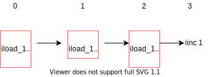
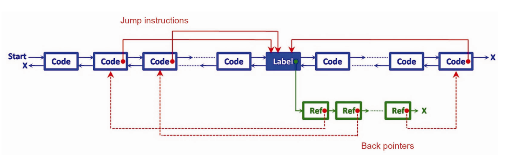
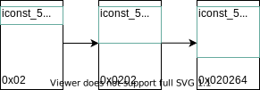

窥孔优化
窥孔优化（peephole optimization）的概念非常简单，在最早的论文[2]中作者只用了2页来介绍其概念以及一些可用的优化模式。我是在龙书中最早看到了这个概念的，后来又在《Crafting A Compiler》[6]中看到了这个概念。
窥孔优化大致这样操作：使用一个滑动窗口，对相邻的一个指令序列进行分析，如果当前窗口内的一个序列能够存在一个更好的等价序列，那么用这个等价序列对原序列进行替换，这里的等价序列可以是一个空的序列，也就是说可以将窗口中指令删除。

几个基本的例子：
1 | // 控制流优化 |
1 | // 无用代码消除 |
1 | // 强度削减 |
这里的指令序列事实上不需要是物理上相邻的，还可以是逻辑上相邻的，也就是说滑动窗口可以只在一个基本块内，也可以横跨几个基本块。分析多个基本块拓宽了分析的空间，因为有的基本块只有1-2条指令，可能比窗口小，另外可以减少间接跳转的情况，甚至消除掉无用的分支语句。
除此之外，窥孔优化还可以配合数据流分析，可以达到类似于常量传播的功能，不过这些优化可能在之前的步骤就已经进行过了。数据流信息对于窥孔优化有很大的帮助，比如说：
1 | load 2, $r1 // $r1 = 2 |
可以这样优化为load 6, $r3么？不行，因为无法保证$r1、$r2中的值在后续没有被使用。需要注意的是在经过寄存器分配之后，已经计算出了每个虚拟寄存器的活跃范围，只需要知道此条指令中的物理寄存器是被分配给了哪个虚拟寄存器，就可以知道当前物理寄存器中的值在此次使用之后是不是活跃的，如果不是，那么直接删除即可，也就是说甚至可以将上面3条指令全部消除掉。
龙书中介绍窥孔优化是将其作为最后一步的优化来进行的，也就是生成了目标代码之后，但是窥孔优化使用的范围不止是在生成了目标代码之后，其实不是的，窥孔优化的概念可以被泛化为在指令序列里面匹配一个模式，匹配成功后用代价更加低的指令序列去替换被匹配的序列。因此，窥孔优化可以使用在最终生成的代码上也可以使用在IR上或者是AST上，不过AST一般不是序列，而是树，那么需要做的不是序列的模式匹配，而是对于树结点的模式匹配。
往往，优化之后可能会产生新的优化机会，比如：

这时候需要对优化窗口进行回退，否则就会错过优化的机会，或者是需要多次遍历，但是这样很慢。假设这里的窗口大小是4，那么就应该回退到发生了替换的位置的3个指令之前，比如在0和1之间由于在iconst_5处发生了替换，那么将窗口移动到3个指令之前，使得窗口的最后一条指令恰好是iconst_5，这样之前的序列就可以察觉到后面发生了变化，从而可能找出可以替换的新模式，这里将窗口移动到iconst_5处可能不是最优的，因为iconst_5没有变化，但是实现起来足够方便，每次移动的大小都是固定的。
算法和数据结构
使用双向链表对指令进行连接可以让指令的移除和添加效率变高，所以使用链表对代码进行组织。如果是跳转指令，那么还需要指向跳转位置，如果一个指令是一个跳转位置，那么指向引用此处的跳转指令。整体结构如下图：

实现了用链表对代码进行组织之后，窗口可以实现为一个队列，向前移动的时候将第一个值出队就行了。
而匹配模式则最好储存在hash表中，这样查找速度比较快，有个简单的方法：窗口大小是4，一个int整数是32位，如果在查找的时候分两个阶段，第一个阶段首先根据指令序列取得hash值，然后根据这个hash值获取一个函数，这个函数检查当前指令序列是否满足要求，比如是否涉及同一个变量，如果是，那么对当前指令序列进行修改。
首先先匹配窗口内第一条指令，然后将范围放大到第二条，第三、第四条，找到一个最大的匹配进行替换，在对范围进行扩大时，将当前计算出的hash值进行左移8位，下面进行演示。
先给下面的指令分配一个值，16进制表示，同时下面也是待会要匹配的序列：
1 | iconst_5 == 0x02 |
这三条指令的hash为0x020264，同时给出一个匹配的规则，x和y表示任意-1到6的整数：
1 | iconst_x |
进行匹配：

每次根据这个值去查找hash表就行了，如果扩大到了4，仍旧没有进行成功的匹配，那么就将窗口向前移动1条指令，如果匹配到了多个，那么选择最长的匹配，可以先匹配长的，再匹配短的。
自动生成
由于窥孔优化往往用于最终阶段，那么不可避免的和目标代码有很大的相关性，但是这样就导致了要实现多个平台的编译器就需要多次实现优化器，所以有自动生成的优化器，PO[5]就是这样一个东西，开发者对目标机器的指令进行描述，然后PO在进行扫描时分析指令序列中的指令的效果，然后寻找效果等价的替换，不过由于需要在运行中分析指令序列的含义，以及对单个的语义进行组合，组合后查找替换，然后将替换的描述再转为目标机器的指令实现。也就会拖慢运行速度，而手写的可以通过hash查表快速解决。
为了解决PO速度的问题，其作者又开发了HOP[8]，能够将PO在一些典型应用上运行的结果缓存在hash表中，在运行时进行使用。
除了为了解决平台相关的问题之外还有变体问题，也就是类似于：
1 | iload_1 |
这里将局部变量从局部变量表中加载出来，然后乘1，结果和直接将局部变量加载出来是一样的。但是这个模式存在多个变体，比如说，从数组中加载一个值而不是从局部变量中加载一个值呢？又比如说，乘的不是int的1，而是float类型或者double类型的1呢？或者加载的方式不是使用了iconst_1而是bipush 1呢？所以这样存在多种变体，如果只写一个泛化的模式然后能够自动进行枚举每种情况就会好得多了。在Lambright[7]的文章中描述了这样的一个问题。
实现
由于之前发过一个图着色寄存器分配的文章，在里面的某个步骤中产生了一些类似于move r1, r1的指令，那么正好使用窥孔优化对这些无用的move进行消除，除此之外再实现一些其他的匹配规则。在Chakraborty[1]的文章中，总结了一些用窥孔优化实现的优化，除此之外，Tanenbaum等人[4]的文章中也罗列了上百种优化，我只实现了常量折叠和一些强度削弱和无用代码消除。
需要注意一下，指令进行消除的时候不应该消除掉副作用，也就是说产生效果类似于1/0的指令是不应该消除的，否则除零异常就丢失了。
如果可以匹配的规则很多，那么会明显拖慢优化器的运行速度，因为匹配的时候需要搜索的空间大了，根据一些研究结果来看，大部分的规则被匹配到的次数都是很少的，即使实现了比较少的规则一样也可以获得不错的优化效果。
参考文献
[1] Chakraborty, Pinaki. 《Fifty Years of Peephole Optimization》. CURRENT SCIENCE 108, 期 12 (2015年): 5.
[2] McKeeman, W. M. 《Peephole optimization》. Communications of the ACM 8, 期 7 (1965年): 443–44. https://doi.org/10.1145/364995.365000.
[3] McKenzie, B J. 《Fast Peephole Optimization Techniques》, 不详, 15.
[4] Tanenbaum, Andrew S., Hans van Staveren和Johan W. Stevenson. 《Using Peephole Optimization on Intermediate Code》. ACM Transactions on Programming Languages and Systems 4, 期 1 (1982年1月): 21–36. https://doi.org/10.1145/357153.357155.
[5] Davidson, Jack W., 和Christopher W. Fraser. 《The Design and Application of a Retargetable Peephole Optimizer》. ACM Transactions on Programming Languages and Systems 2, 期 2 (1980年4月): 191–202. https://doi.org/10.1145/357094.357098.
[6] Fischer, Charles N., Ron K. Cytron和Richard J. LeBlanc Jr. 《Crafting A Compiler》. 收入 Crafting A Compiler, 532–37. Addison-Wesley, 2009. https://book.douban.com/subject/4468660/.
[7] Lambright, Dan. “Java bytecode optimizations.” Proceedings IEEE COMPCON 97. Digest of Papers (1997): 206-210.
[8] Davidson, Jack W., 和Christopher W. Fraser. 《Automatic Inference and Fast Interpretation of Peephole Optimization Rules†》. Software: Practice and Experience 17, 期 11 (1987年11月): 801–12. https://doi.org/10.1002/spe.4380171104.